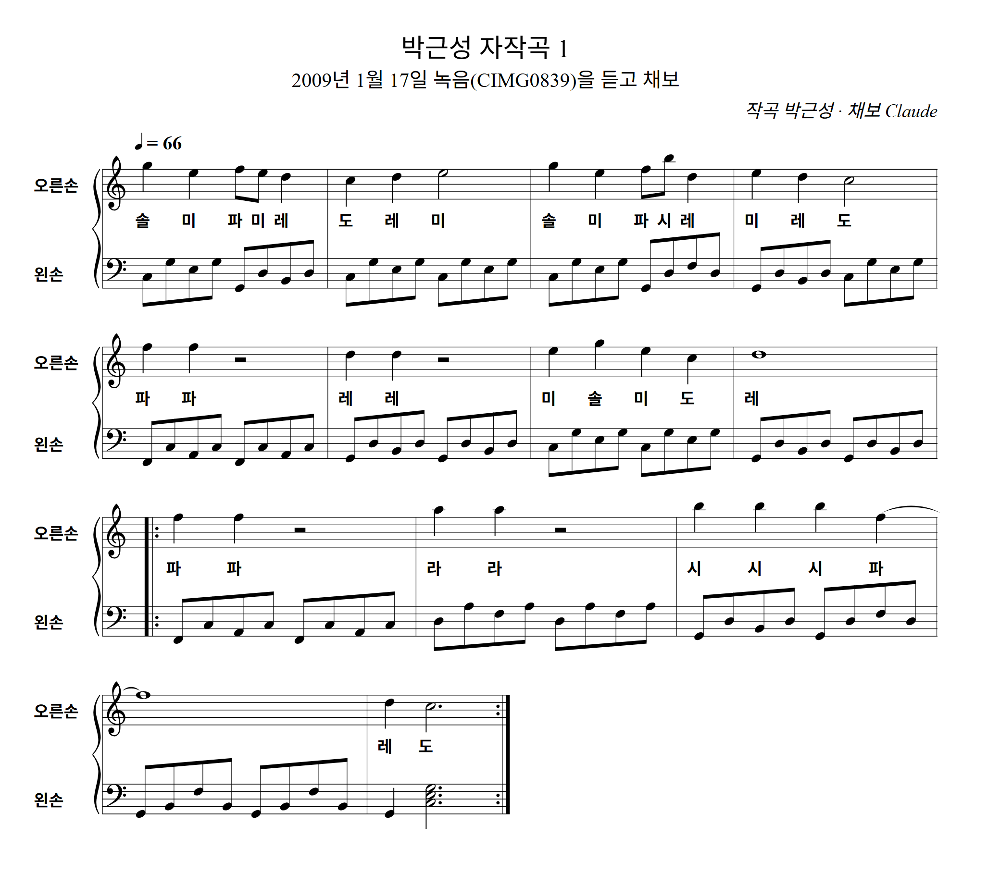

1곡 이야기
35년 경력 국가공인 피아노조율사 박근성이 젊은 시절부터 마음에 품고 치던 곡이에요. 오래된 카메라 속 1분짜리 녹음 파일에 그날의 연주가 그대로 남아 있었어요.
다장조(C장조) · 4/4박자 · ♩=66 (느리고 따뜻하게) · 13마디 + 9~13마디 반복
화음 흐름: 도 → 솔 → 도 → 파 → 솔 → 도 → 솔 → 파 → 레단조 → 솔7 → 도
📞 피아노 조율·운반·대여 문의 010-8756-8740
2009년 1월 17일, 작곡자가 디지털피아노로 직접 연주한 옛 녹음을 다시 찾아 한 음씩 듣고 양손 악보로 옮겼어요.
오른손은 "솔 미 파미 레 / 도 레 미"로 시작하는 노래, 왼손은 8분음표로 흐르는 분산화음이에요.
ⓒ 작곡 박근성 (성실피아노) · 무단 복제·편곡·사용을 금합니다.

35년 경력 국가공인 피아노조율사 박근성이 젊은 시절부터 마음에 품고 치던 곡이에요. 오래된 카메라 속 1분짜리 녹음 파일에 그날의 연주가 그대로 남아 있었어요.
다장조(C장조) · 4/4박자 · ♩=66 (느리고 따뜻하게) · 13마디 + 9~13마디 반복
화음 흐름: 도 → 솔 → 도 → 파 → 솔 → 도 → 솔 → 파 → 레단조 → 솔7 → 도
📞 피아노 조율·운반·대여 문의 010-8756-8740
🎬 원곡 연주 영상을 준비하고 있어요. 곧 이곳에서 보실 수 있어요!
마디를 누르면 그곳부터 들려줘요. 14~18마디는 9~13마디 반복을 펼쳐 적은 거예요.
양손 악보 그대로 만든 MIDI 파일이에요. 피아노 앱·작곡 프로그램(큐베이스 등)에서 열 수 있어요.
⬇️ MIDI 파일 받기 (song1-2009-piano.mid)
ⓒ 작곡 박근성 · 무단 복제·편곡·사용 금지.